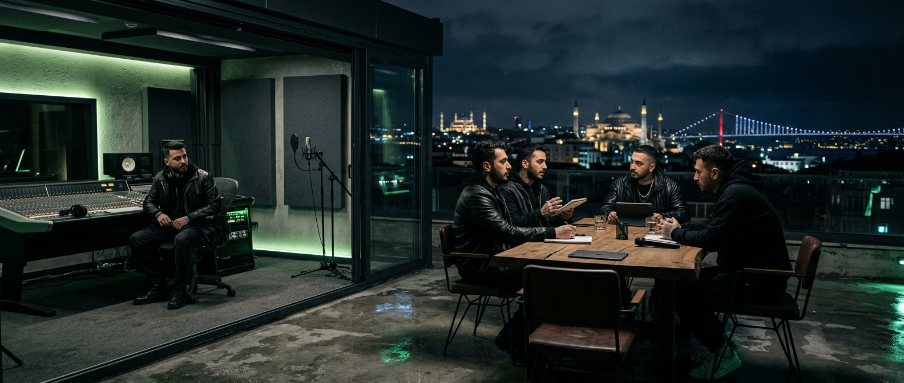

İstanbul • kayıt, görsel, performans
CULTURE, daha rafine bir dille.
CLTR burada sadece bir logo gibi durmuyor; kayıt masasından sahne dumanına, yayın takviminden görsel dile kadar tek parça hissedilen bir dünya kuruyor. Metinler daha doğal, daha temiz ve daha gerçek bir tona çekildi; giriş bölümü de daha premium bir karşılama deneyimi verecek şekilde yeniden tasarlandı.
liveDevelopment tarafından hazırlandı.